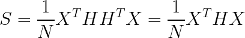

降维基础知识（样本均值、样本方差、中心矩阵）与PCA（最大投影方差，最小重构代价，SVD分解）¶
降维分为三种：特征选择、线性降维和非线性降维。本文主要介绍一些关于降维的基本知识以及线性降维的典例PCA（主成分分析法）。
降维基础知识与PCA入门¶
- 1.Dimension Reduction概述
- 2.降维基础知识
- 2.1样本矩阵
- 2.2样本均值
- 2.3样本协方差矩阵
- 3.Feature selection
- 4.Principe component abalysis(PCA)
- 4.1大概了解PCA
- 4.2最大投影方差
- 4.3最小重构代价
- 4.4从SVD分解来理解PCA
- 5.PCA与PCoA辨析
1.Dimension Reduction概述¶
在很多应用中，数据的维数会很高。以图像数据为例，我们要识别28 * 28的手写数字图像，如果将像素按行或者列拼接起来形成向量，这个向量的维数是784。 高维的数据不仅给机器学习算法带来挑战，而且导致计算量大，此外还会面临维数灾难的问题（这一问题可以直观的理解成特征向量维数越高，机器学习算法的精度反而会降低）。 人所能直观看到和理解的空间最多是3维的，为了数据的可视化，我们也需要将数据投影到低维空间中，因此就需要有数据降维这种算法来完成此任务。
我们以MNIST为例：
每一个输入的digit都是28*28维数据，我们用像素点来描述的话确实是需要28 * 28的，但是我们换一种思路，比如上面的一堆3放在一起，正中间的“3”放得最正，角度为0，它顺时针旋转10°，就可以变成它右边那个样子。因此，实际上，我们只需要一个维度的数据，也就是旋转的角度，就可以唯一确定这个图像长成什么样子。
因此，降维的定义可以如下：
我们输入一vector X，经过function，得到输出vector Z，但是这里Z比X的维度要小，这样就达到了Dimension Reduction的目的。
2.降维基础知识¶
2.1样本矩阵¶
我们先给定样本数据的形式：一共N个样本，每一个样本都是P维的，定义X如下：
我们称X为 样本矩阵 。
2.2样本均值¶
我们定义 样本均值 X̅ 为：
可以看到样本均值是一个 p × 1 的矩阵，每一行都是该特征方向上所有样本的平均值。
2.3样本协方差矩阵¶
我们定义 样本协方差矩阵 S为：
对于 ( x1−X̅ x2−X̅ . . . xN-X̅)，我们继续化简：

其中 EN表示单位矩阵，HN我们称之为中心矩阵。
于是协方差S的表达式为：
对于中心矩阵H我们有以下两个性质：（很好证明，就不证明了）
于是S可以继续化简：

3.Feature selection¶
Feature selection（特征选择）是最简单的一种降维的方法。比如上面的data，主要集中在 x2这个维度，那x1这个维度完全可以不要。但是我们很容易发现这个方法局限性太强了，只能在特定的情况下使用。
4.Principe component abalysis(PCA)¶
4.1大概了解PCA¶
PCA是说，我们要根据已有的x来找到一个W，使得z=Wx，进而达到降维的目的。
举一个最简单的例子，不管x原先是多少维，我们现在要做的就是把x降为一维，也就是z变成一个 数字 ，那么很显然如果x是一个K维的向量，W就是一个K维向量的转置，也就是一个row。

如上所示： z1 = w1x相当于做内积。而我们知道两个向量做内积，其实就是将一个向量投影到另一个向量上。
假设有如上图所示的一组二维空间上的data（蓝色点），我们想要将它们投影到一维空间上，如下所示：
对每一个样本来说，上标代表样本序号，下标代表每个样本的属性序号。最终我们得到一个一行三列的向量，每个数字代表每一个样本降维后的值。
那么在二维空间里， w1其实就是一个点，而每个点我们都可以看做一个向量（跟原点相连），然后每一个点再依次投影到这个向量上。
我们再次看这张图：向量 w1我们有无数种选择（只要终点坐标不同，那么 w1就不同），我们姑且选择上述两个方向。对于右上方那条直线，我们将所有样本投影到该直线上；对于指向左上方的那条直线，我们同样将所有的样本投影到这条直线上。二者有什么不同？后者投影后得到的样本更加集中。因此variance更小，而前者更大。是二者都行么还是只能选一个呢？我们必须有一个标准，这个标准就是： 我们希望选一个 w1，经过降维后，样本的variance越大越好，也就是我们不希望说通过这个projection以后所有的点通通挤在一起，把本来的data point跟data point之间的奇异度拿掉了。
一句话概括：我们变换一个坐标（降维），使得所有的样本在新坐标上的分布更加差异化。（方差越大，保留的信息越多）
每一个样本点投影后都会得到一个z1，那么所有 z1的方差为：
也就是在二维平面上，我们可选择无数个方向，然后让二维平面上的点都投影到这个方向上，并求出它们投影后的方差， **而我们选择方差最大的一个方向作为 w1。但这里有一个重要的前提就是，我们假设这个方向的模是1，也就是说 ∣ ∣ w1 ∣ ∣2等于1，这个假设后面再解释为什么。
那假设我们要投影到二维空间上呢？（原本是三维甚至更高）那我们就需要找到一个 w2, ∣ ∣ w2 ∣ ∣2 = 1 ，然后让所有点投影到这个平面上，我们同样使得所有三维空间上的样本点投影到二维平面后它们的方差最大即可。
4.2最大投影方差¶
为了表示方便，下面将把 w1换成 w1。
1. 中心化
中心化的意思是，我们对每一个xi 都执行 xi - X̅操作。为什么要这么做，下面就会知道。
2. 求投影
在PCA的介绍里，我们知道PCA要干的就是让样本的 投影方差最大化 ，我们假设要将所有的样本投影到 w1上面，那么投影可以表示为:
这里我们就可以解释为什么我们要假设∣∣ w1 ∣∣2 = 1 因为有这个假设，我们就可以把投影写成内积的形式。
3. 投影方差
有了投影之后我们就能定义投影方差为：

这个时候第一步的好处就体现出来了，我们要求样本 xi投影后的方差，实际上我们第一步可以就先减去均值，这样在算真正的方差的时候就不用再减去均值了。第一步也不算是说有什么好处，就是说一种新的思考方式吧。我们对投影方差继续化简：
于是投影方差最大化问题就变成:
4. 拉格朗日乘数法
在再谈SVM（hard-margin和soft-margin详细推导、KKT条件、核技巧）中我们多次用拉格朗日乘数法来求解约束问题，这里也不例外，这个问题求解比较简单：
我们令 L(w1, λ ) 为：
L对w1求导得：
通过求导以及特征向量的定义，我们发现w1 与 λ实际上就是方差矩阵S的特征向量与特征值。
通过拉格朗日乘数法我们知道了：w1实际上就是协方差矩阵的一个特征向量。那么只要我们将协方差矩阵S进行特征值分解即可得到所有的变换矩阵w。比如在上述描述中，样本矩阵X是N x p维，协方差矩阵S是p x p维，我们对S进行特征值分解：（S是对称矩阵）

其中K是一个对角阵为p x p维，p是每一个样本的特征数，对角上的元素就是特征值，G的每一列都是S的特征向量。我们将S的特征向量从大到小重排，假设我们选择前k个特征向量，也就是G中的前k列，我们记为G′,那么G′就是p x k维，我们用样本矩阵X乘上G′的矩阵，得到一个N x k维的矩阵，这样，每一个样本都从原来的p维变成了k维，我们就达到了降维的目的。
上面这段话是 降维的核心思想 ，我们是从特征分解角度去理解的。
4.3最小重构代价¶
什么是重构代价？我们画个图了解一下：
通过最大投影方差理论我们知道，我们实际上是将样本投影到某一个方向，比如说 u1方向，并且使投影后的样本点坐标方差最大。假如现在要投影到两个方向（二维，降维到几维就找几个方向）u1与u2，那么投影后我们只是相当于把原来的向量xi重构了，只是换了一个坐标系， xi用新坐标系表示为：
前面 xiTu1只是一个数，乘上单位向量就变成了一个u1方向上的向量。因此，假设降维到q维，则我们需要q个正交的单位向量（对S进行特征分解，取前q个），则变换坐标后 xi的表达式变为：
样本 x i x_{i} xi的重构代价我们定义为:
上式表示要将 xi从p维降为q维的重构代价，那么所有样本的重构代价加起来就是总的重构代价：
因此最小重构代价即为：

4.4从SVD分解来理解PCA¶
我们换一种思路，从SVD分解的角度去探索PCA。
- 首先我们将X中心化，也就是X左乘一个中心矩阵H，这里就不推导了，其实很简单的: X->HX
- 对中心化后的样本矩阵进行SVD分解:
SVD分解满足：
I是单位矩阵。
而我们又知道 S=XTHX（去掉前面常数不影响结果），将HX代入到S中得到：

而根据前面对S的特征值分解：
所以有 G = V , K = Σ2。即我们将样本矩阵中心化后，首先进行SVD分解，然后代入到协方差矩阵，依然可以得到特征向量。
我们知道，对每一个样本（假设是二维） xi，我们中心化后再乘上 w1，即 ( xi − x̅ )w1， 就可以得到该样本投影在主成分方向上后的坐标。这个坐标也包含两个维度。
5.PCA与PCoA辨析¶
我们换一种思路，我们令：
上述结果我们可以看出， Σ2相当于是T的特征值组成的对角阵，而：
因此S和T具有相同的特征值。V里面每一列都是协方差矩阵S的特征向量，也就是所谓的“主成分”。因此 HX⋅V就是每一个样本降维后在新坐标系上的坐标值，坐标矩阵表达式如下：
我们对T进一步操作：
我们前面知道 Σ2是T的特征值组成的对角阵，因此 UΣ实际上就是T特征向量组成的矩阵。也就是说：坐标矩阵，实际上就是T的特征向量组成的矩阵。因此对T进行特征值分解，我们可以直接得到坐标矩阵，这种分析方法又叫主坐标分析法（PCoA）。
我们知道S是p x p维，T是N x N维，我们可以根据p与N的大小关系，来决定对谁进行分解，进而简化运算。
凡本网注明"来源：XXX "的文/图/视频等稿件，本网转载出于传递更多信息之目的，并不意味着赞同其观点或证实其内容的真实性。如涉及作品内容、版权和其它问题，请与本网联系，我们将在第一时间删除内容！
作者: Cyril_KI
来源： https://blog.csdn.net/Cyril_KI/article/details/107700814